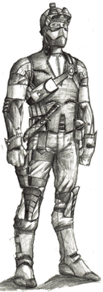

SPY  There are "" on your team STATS Max health: 90 Max armor: 100 Light Armor Max speed: Medium WEAPONS Tranquilizer, Double-Barrel Shotgun, Nail Gun, Knife GRENADES Hand Grenades, Hallucination Grenades ABILITIES Can disguise to look like and enemy. Can feign death. Can remove an enemy Spy's disguise. Can backstab for and instant kill.